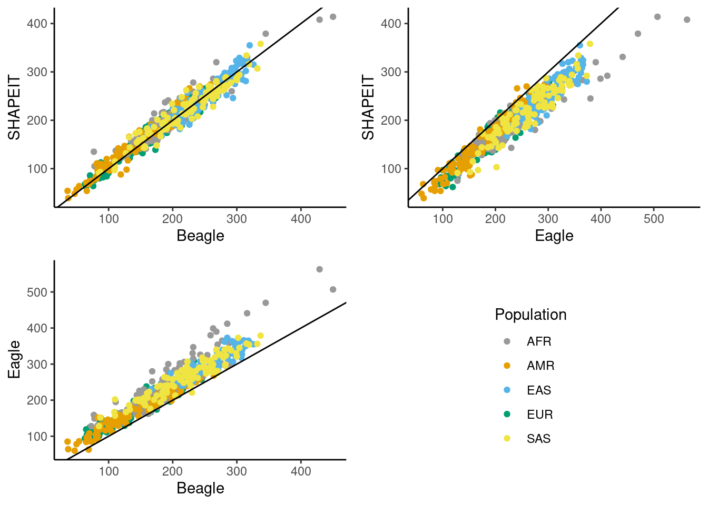
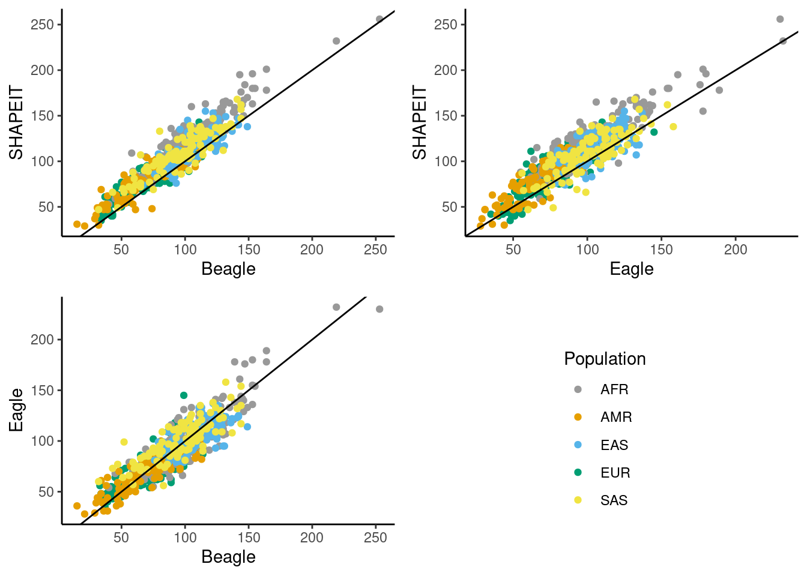

Last updated: 2024-03-13
Checks: 6 1
Knit directory: phasing/
This reproducible R Markdown analysis was created with workflowr (version 1.7.1). The Checks tab describes the reproducibility checks that were applied when the results were created. The Past versions tab lists the development history.
Great! Since the R Markdown file has been committed to the Git repository, you know the exact version of the code that produced these results.
Great job! The global environment was empty. Objects defined in the global environment can affect the analysis in your R Markdown file in unknown ways. For reproduciblity it’s best to always run the code in an empty environment.
The command set.seed(20220221) was run prior to running
the code in the R Markdown file. Setting a seed ensures that any results
that rely on randomness, e.g. subsampling or permutations, are
reproducible.
Great job! Recording the operating system, R version, and package versions is critical for reproducibility.
Nice! There were no cached chunks for this analysis, so you can be confident that you successfully produced the results during this run.
Using absolute paths to the files within your workflowr project makes it difficult for you and others to run your code on a different machine. Change the absolute path(s) below to the suggested relative path(s) to make your code more reproducible.
| absolute | relative |
|---|---|
| /net/snowwhite/home/beckandy/research/phasing/output/switch_errors/switch_errors/eagle/annotated/ | output/switch_errors/switch_errors/eagle/annotated |
| /net/snowwhite/home/beckandy/research/phasing/output/switch_errors/switch_errors/shapeit/annotated/ | output/switch_errors/switch_errors/shapeit/annotated |
| /net/snowwhite/home/beckandy/research/phasing/output/switch_errors/switch_errors/beagle/annotated/ | output/switch_errors/switch_errors/beagle/annotated |
| /net/snowwhite/home/beckandy/research/phasing/output/switch_errors/vcf_n_sites/ | output/switch_errors/vcf_n_sites |
| /net/snowwhite/home/beckandy/research/phasing/output/switch_errors/whatshap/ | output/switch_errors/whatshap |
| /net/snowwhite/home/beckandy/research/phasing/output/switch_errors/het_loc/ | output/switch_errors/het_loc |
| /net/snowwhite/home/beckandy/research/phasing/output/switch_errors/het_loc/phased_size.csv | output/switch_errors/het_loc/phased_size.csv |
Great! You are using Git for version control. Tracking code development and connecting the code version to the results is critical for reproducibility.
The results in this page were generated with repository version 400643c. See the Past versions tab to see a history of the changes made to the R Markdown and HTML files.
Note that you need to be careful to ensure that all relevant files for
the analysis have been committed to Git prior to generating the results
(you can use wflow_publish or
wflow_git_commit). workflowr only checks the R Markdown
file, but you know if there are other scripts or data files that it
depends on. Below is the status of the Git repository when the results
were generated:
Ignored files:
Ignored: .Rhistory
Ignored: .Rproj.user/
Ignored: data/1kgp/
Ignored: data/consensus/
Ignored: data/gnomAD/
Ignored: data/mask/
Ignored: data/ovary/
Ignored: data/recomb/
Ignored: data/ref/
Ignored: data/shapeit/
Ignored: output/2023_switch_errors/
Ignored: output/X_hets/
Ignored: output/admix_switch_errors/
Ignored: output/afr_eur_ref/
Ignored: output/background_rates/
Ignored: output/figures/
Ignored: output/filter_switch_errors/
Ignored: output/final_switch_errors/
Ignored: output/gnomad/
Ignored: output/male_only_reference/
Ignored: output/nygc/
Ignored: output/singleton_switch_errors/
Ignored: output/switch_errors/
Ignored: plink.log
Ignored: sandbox/
Note that any generated files, e.g. HTML, png, CSS, etc., are not included in this status report because it is ok for generated content to have uncommitted changes.
These are the previous versions of the repository in which changes were
made to the R Markdown
(analysis/phasing_results_refRef.Rmd) and HTML
(docs/phasing_results_refRef.html) files. If you’ve
configured a remote Git repository (see ?wflow_git_remote),
click on the hyperlinks in the table below to view the files as they
were in that past version.
| File | Version | Author | Date | Message |
|---|---|---|---|---|
| Rmd | 400643c | Andy Beck | 2024-03-13 | wflow_publish("analysis/phasing_results_refRef.Rmd") |
| html | e340f5e | Andy Beck | 2024-03-12 | Build site. |
| Rmd | 8ce2855 | Andy Beck | 2024-03-12 | wflow_publish("analysis/phasing_results_refRef.Rmd") |
| html | d8d7a7e | Andy Beck | 2024-03-08 | Build site. |
| Rmd | 2b7807e | Andy Beck | 2024-03-08 | wflow_publish("analysis/phasing_results_refRef.Rmd") |
library(tidyverse)── Attaching core tidyverse packages ──────────────────────── tidyverse 2.0.0 ──
✔ dplyr 1.1.4 ✔ readr 2.1.5
✔ forcats 1.0.0 ✔ stringr 1.5.1
✔ ggplot2 3.5.0 ✔ tibble 3.2.1
✔ lubridate 1.9.3 ✔ tidyr 1.3.1
✔ purrr 1.0.2
── Conflicts ────────────────────────────────────────── tidyverse_conflicts() ──
✖ dplyr::filter() masks stats::filter()
✖ dplyr::lag() masks stats::lag()
ℹ Use the conflicted package (<http://conflicted.r-lib.org/>) to force all conflicts to become errorslibrary(janitor)
Attaching package: 'janitor'
The following objects are masked from 'package:stats':
chisq.test, fisher.testlibrary(reactable)
library(gtsummary)
source("code/common_functions.R")
cbbPalette <- c("#999999", "#E69F00", "#56B4E9", "#009E73", "#F0E442", "#0072B2", "#D55E00", "#CC79A7")# function takes dataframe and two column names, returns a scatterplot
scatterplot <- function(df, x_var, y_var, colour_var, xlab, ylab){
ggplot(df) +
geom_point(aes(.data[[x_var]], .data[[y_var]], color = .data[[colour_var]])) +
labs(x = xlab, y = ylab) +
theme_classic() +
geom_abline(slope = 1, intercept = 0) +
scale_color_manual(values=cbbPalette)
}eagle_switch_dir <- "/net/snowwhite/home/beckandy/research/phasing/output/switch_errors/switch_errors/eagle/annotated/"
shapeit_switch_dir <- "/net/snowwhite/home/beckandy/research/phasing/output/switch_errors/switch_errors/shapeit/annotated/"
beagle_switch_dir <- "/net/snowwhite/home/beckandy/research/phasing/output/switch_errors/switch_errors/beagle/annotated/"
num_sites_dir <- "/net/snowwhite/home/beckandy/research/phasing/output/switch_errors/vcf_n_sites/"
whatshap_dir <- "/net/snowwhite/home/beckandy/research/phasing/output/switch_errors/whatshap/"
het_loc_dir <- "/net/snowwhite/home/beckandy/research/phasing/output/switch_errors/het_loc/"gc_content_1kb <- read_tsv("data/ref/gc1kb_X_only.bed")Rows: 156041 Columns: 12
── Column specification ────────────────────────────────────────────────────────
Delimiter: "\t"
chr (1): #1_usercol
dbl (11): 2_usercol, 3_usercol, 4_pct_at, 5_pct_gc, 6_num_A, 7_num_C, 8_num_...
ℹ Use `spec()` to retrieve the full column specification for this data.
ℹ Specify the column types or set `show_col_types = FALSE` to quiet this message.colnames(gc_content_1kb) <- c("CHR", "START", "END", "AT", "GC", "A", "C", "G", "T", "TOTAL", "OTHER", "LENGTH")
gc_content_1kb <- gc_content_1kb %>%
mutate(bin_id = (START / 1000) + 1)
df_vcftools <- lapply(c(1:700),
function(x){
switch_summary(x, eagle_switch_dir, beagle_switch_dir, shapeit_switch_dir, gc_content_1kb, het_loc_dir)
}) %>%
bind_rows()
df_vcftools$pop <- c(rep("EUR", 200), rep("AFR", 200), rep("AMR", 100), rep("EAS", 100), rep("SAS", 100))
df_wh_eagle <- get_all_whatshap("eagle", n = 700, pop = c(rep("EUR", 200), rep("AFR", 200), rep("AMR", 100), rep("EAS", 100), rep("SAS", 100)))
df_wh_beagle <- get_all_whatshap("beagle", n = 700, pop = c(rep("EUR", 200), rep("AFR", 200), rep("AMR", 100), rep("EAS", 100), rep("SAS", 100)))
df_wh_si <- get_all_whatshap("shapeit", n = 700, pop = c(rep("EUR", 200), rep("AFR", 200), rep("AMR", 100), rep("EAS", 100), rep("SAS", 100)))
# pd_size <- data.frame(id = 1:700, size = rep(0, 700))
# for(i in 1:700){
# df_het <- read_tsv(paste0(het_loc_dir, "pair_",i,"_het_loc.txt"), col_names = c("chr", "pos", "gt", "X"),show_col_types = FALSE)
# min_pos <- df_het$pos[1]
# max_pos <- df_het$pos[length(df_het$pos)]
# n_pos <- max_pos - min_pos
# pd_size$size[i] <- n_pos
# }
# write_csv(pd_size, "/net/snowwhite/home/beckandy/research/phasing/output/switch_errors/het_loc/phased_size.csv")
par_size <- (2781479 - 10001) + (156030895 - 155701383)
pd_size <- read_csv("/net/snowwhite/home/beckandy/research/phasing/output/switch_errors/het_loc/phased_size.csv",show_col_types = FALSE) %>%
mutate(size_mb = (size - par_size) / 1e6)
df_wh_eagle$size_mb <- pd_size$size_mb
df_wh_beagle$size_mb <- pd_size$size_mb
df_wh_si$size_mb <- pd_size$size_mb
df_vcftools$size_mb <- pd_size$size_mbWe first look at the average counts for each type of error (flips and non-flip switches) for each method within each of the five 1kGP super-populations:
df_vcftools %>%
group_by(pop) %>%
summarise(mean_switch_eagle = mean(n_other_eagle),
mean_switch_beagle = mean(n_other_beagle),
mean_switch_shapeit = mean(n_other_shapeit),
mean_flip_eagle = mean(n_flip_eagle),
mean_flip_beagle = mean(n_flip_beagle),
mean_flip_shapeit = mean(n_flip_shapeit)) %>%
reactable()We see that in all populations, Eagle has a higher mean number of switch errors per synthetic diploid than Beagle, which in turn has a higner number of switch errors per synthetic diploid than SHAPEIT. In contrast, SHAPEIT has a higher average number of flip errors per synthetic diploid than the other two methods. Below we report the same metrics, but on a per-MB scale:
df_vcftools %>%
group_by(pop) %>%
summarize(mean_switch_eagle = mean(n_other_eagle / size_mb),
mean_switch_beagle = mean(n_other_beagle / size_mb),
mean_switch_shapeit = mean(n_other_shapeit / size_mb),
mean_flip_eagle = mean(n_flip_eagle / size_mb),
mean_flip_beagle = mean(n_flip_beagle / size_mb),
mean_flip_shapeit = mean(n_flip_shapeit / size_mb)) %>%
reactable()On a per-MB scale, we see the highest rate of switches per MB is observed in the EAS super-population across all three methods, while the lowest switch-error rate is observed in the AMR super-population. The AMR super-population consists of samples from 6 North American admixed samples. For flips, the highest rate of flips per MB for Eagle and Beagle are seen in the EAS super-population as well, while the highest observed rate for SHAPEIT is in the AFR super-population. The correlations of the flip and switch rates are presented below:
df_vcftools %>%
group_by(pop) %>%
summarize(mean_switch_eagle = mean(n_other_eagle / size_mb),
mean_switch_beagle = mean(n_other_beagle / size_mb),
mean_switch_shapeit = mean(n_other_shapeit / size_mb)) %>%
corrr::correlate(diagonal = 1, method = "pearson") %>%
reactable()Non-numeric variables removed from input: `pop`
Correlation computed with
• Method: 'pearson'
• Missing treated using: 'pairwise.complete.obs'df_vcftools %>%
group_by(pop) %>%
summarize(mean_switch_eagle = mean(n_other_eagle / size_mb),
mean_switch_beagle = mean(n_other_beagle / size_mb),
mean_switch_shapeit = mean(n_other_shapeit / size_mb)) %>%
corrr::correlate(diagonal = 1, method = "spearman") %>%
reactable()Non-numeric variables removed from input: `pop`
Correlation computed with
• Method: 'spearman'
• Missing treated using: 'pairwise.complete.obs'df_vcftools %>%
group_by(pop) %>%
summarize(mean_flip_eagle = mean(n_flip_eagle / size_mb),
mean_flip_beagle = mean(n_flip_beagle / size_mb),
mean_flip_shapeit = mean(n_flip_shapeit / size_mb)) %>%
corrr::correlate(diagonal = 1, method = "pearson") %>%
reactable()Non-numeric variables removed from input: `pop`
Correlation computed with
• Method: 'pearson'
• Missing treated using: 'pairwise.complete.obs'df_vcftools %>%
group_by(pop) %>%
summarize(mean_flip_eagle = mean(n_flip_eagle / size_mb),
mean_flip_beagle = mean(n_flip_beagle / size_mb),
mean_flip_shapeit = mean(n_flip_shapeit / size_mb)) %>%
corrr::correlate(diagonal = 1, method = "spearman") %>%
reactable()Non-numeric variables removed from input: `pop`
Correlation computed with
• Method: 'spearman'
• Missing treated using: 'pairwise.complete.obs'A similar metric is the mean number of heterozygous positions in-between each error. These can be thought of as “trials” at which an error could have occured but did not. Note that this isn’t quite right, as we consider each error type independently and are counting the number of heterozygoud positions between errors of each type that are not themselves locations of errors of that type.
df_vcftools %>%
group_by(pop) %>%
summarize(mean_het_switch_beagle = mean(mean_hets_switch_beagle),
mean_het_switch_eagle = mean(mean_hets_switch_eagle),
mean_het_switch_shapeit = mean(mean_hets_switch_shapeit)) %>%
reactable()The above table does not account for differences in the mean number of heterozygous positions within each synthethic diploid across the populations:
df_vcftools %>%
group_by(pop) %>%
summarize(mean_n_het = mean(n_hets),
sd_n_het = sd(n_hets)) %>%
reactable()Here we plot the count of errors within each synthetic diploid between each pair of methods.
p1 <- scatterplot(df_vcftools, "n_other_beagle", "n_other_eagle", "pop", "Beagle", "Eagle") + labs(colour="Population")
legend_obj <- cowplot::get_legend(p1)Warning in get_plot_component(plot, "guide-box"): Multiple components found;
returning the first one. To return all, use `return_all = TRUE`.p1 <- p1 + guides(colour = "none")
p2 <- scatterplot(df_vcftools, "n_other_beagle", "n_other_shapeit", "pop", "Beagle", "SHAPEIT") +
guides(colour="none")
p3 <- scatterplot(df_vcftools, "n_other_eagle", "n_other_shapeit", "pop", "Eagle", "SHAPEIT") +
guides(colour="none")
gridExtra::grid.arrange(p2, p3, p1, legend_obj, layout_matrix = matrix(c(1, 2, 3, 4), byrow = TRUE, ncol = 2))
| Version | Author | Date |
|---|---|---|
| e340f5e | Andy Beck | 2024-03-12 |
p1 <- scatterplot(df_vcftools, "n_flip_beagle", "n_flip_eagle", "pop", "Beagle", "Eagle") + labs(colour="Population")
legend_obj <- cowplot::get_legend(p1)Warning in get_plot_component(plot, "guide-box"): Multiple components found;
returning the first one. To return all, use `return_all = TRUE`.p1 <- p1 + guides(colour = "none")
p2 <- scatterplot(df_vcftools, "n_flip_beagle", "n_flip_shapeit", "pop", "Beagle", "SHAPEIT") +
guides(colour="none")
p3 <- scatterplot(df_vcftools, "n_flip_eagle", "n_flip_shapeit", "pop", "Eagle", "SHAPEIT") +
guides(colour="none")
gridExtra::grid.arrange(p2, p3, p1, legend_obj, layout_matrix = matrix(c(1, 2, 3, 4), byrow = TRUE, ncol = 2))
| Version | Author | Date |
|---|---|---|
| e340f5e | Andy Beck | 2024-03-12 |
We simulate synthetic diploids with known phase by sampling male X chromosomes from the 1kGP study. Each synthetic diploid is statistically phased with a reference panel consisting of the 1kGP samples which were not used to construct the synthetic diploid, and the results of the three phasing methods are compared to the true phase to assess their accuracy. Switches and flips are tallied within each synthetic diploid, and these counts form the basis of our evaluation of the performance of the three methods. Additionally, we evaluate the overlap of errors across methods by identifying shared switch and flip errors. The genomic context in which the errors occur is also evaluated by contrasting the density of errors across the X chromosome with genomic features including GC content and recombination rate.
df_vcftools %>%
mutate(n_total_beagle = n_other_beagle + n_flip_beagle,
n_total_eagle = n_other_eagle + n_flip_eagle,
n_total_shapeit = n_other_shapeit + n_flip_shapeit) %>%
mutate(delta_beagle_eagle = n_total_beagle - n_total_eagle,
delta_beagle_shapeit = n_total_beagle - n_total_shapeit,
delta_eagle_shapeit = n_total_eagle - n_total_shapeit,
e_big_b = ifelse(n_total_eagle > n_total_beagle, "Y", "N"),
b_big_s = ifelse(n_total_beagle > n_total_shapeit, "Y", "N"),
s_big_b = ifelse(n_total_shapeit > n_total_beagle, "Y", "N"),
e_big_s = ifelse(n_total_eagle > n_total_shapeit, "Y", "N")) %>%
select(starts_with("delta"),contains("_big_")) %>%
gtsummary::tbl_summary(statistic = list(all_continuous() ~ "{mean} ({sd})"),
digits = list(all_continuous() ~ c(1,2))) %>%
gtsummary::as_gt()| Characteristic | N = 7001 |
|---|---|
| delta_beagle_eagle | -39.0 (20.38) |
| delta_beagle_shapeit | -3.6 (14.38) |
| delta_eagle_shapeit | 35.5 (20.60) |
| e_big_b | |
| N | 6 (0.9%) |
| Y | 694 (99%) |
| b_big_s | |
| N | 434 (62%) |
| Y | 266 (38%) |
| s_big_b | |
| N | 286 (41%) |
| Y | 414 (59%) |
| e_big_s | |
| N | 17 (2.4%) |
| Y | 683 (98%) |
| 1 Mean (SD); n (%) | |
df_vcftools %>%
mutate(n_total_beagle = n_other_beagle + n_flip_beagle,
n_total_eagle = n_other_eagle + n_flip_eagle,
n_total_shapeit = n_other_shapeit + n_flip_shapeit) %>%
mutate(delta_beagle_eagle = n_total_beagle - n_total_eagle,
delta_beagle_shapeit = n_total_beagle - n_total_shapeit,
delta_eagle_shapeit = n_total_eagle - n_total_shapeit) %>%
select(pop, starts_with("delta")) %>%
gtsummary::tbl_summary(by=pop) %>% #gtsummary::tbl_summary(by=pop, statistic = list(all_continuous() ~ "{mean} ({sd})")) %>%
gtsummary::as_gt()| Characteristic | AFR, N = 2001 | AMR, N = 1001 | EAS, N = 1001 | EUR, N = 2001 | SAS, N = 1001 |
|---|---|---|---|---|---|
| delta_beagle_eagle | -43 (-53, -30) | -27 (-36, -19) | -45 (-56, -35) | -32 (-41, -23) | -43 (-55, -31) |
| delta_beagle_shapeit | -5 (-15, 4) | -6 (-14, 2) | -2 (-12, 12) | -2 (-11, 5) | 0 (-11, 10) |
| delta_eagle_shapeit | 37 (26, 49) | 21 (12, 30) | 45 (33, 58) | 30 (20, 38) | 40 (27, 56) |
| 1 Median (IQR) | |||||
Considering the total number of errors observed within each synthetic diploid, we find that Eagle tends to introduce more errors than both Beagle and SHAPEIT. On average, Eagle produces 39 more errors (\(\sigma=20.38\)) per synthetic diploid than Beagle, and 35.5 (\(\sigma=20.60\)) more errors than SHAPEIT. Across the 700 synthetic diploids, in 694 we observe more errors in Eagle than in Beagle, and similarly we observe more errors in Eagle than in SHAPEIT in 683 synthetic diploids. The distributions of total errors between Beagle and SHAPEIT are more similar, with Beagle producing on average 3.6 (\(\sigma=14.38\)) more errors per synthetic diploid than SHAPEIT, while SHAPEIT introduces more total errors in 414 of the synthetic diploids while Beagle introduces more errors in 266 of the synthetic diploids.
sessionInfo()R version 4.3.3 (2024-02-29)
Platform: x86_64-pc-linux-gnu (64-bit)
Running under: Ubuntu 20.04.6 LTS
Matrix products: default
BLAS: /usr/lib/x86_64-linux-gnu/openblas-pthread/libblas.so.3
LAPACK: /usr/lib/x86_64-linux-gnu/openblas-pthread/liblapack.so.3; LAPACK version 3.9.0
locale:
[1] LC_CTYPE=en_US.UTF-8 LC_NUMERIC=C
[3] LC_TIME=en_US.UTF-8 LC_COLLATE=en_US.UTF-8
[5] LC_MONETARY=en_US.UTF-8 LC_MESSAGES=en_US.UTF-8
[7] LC_PAPER=en_US.UTF-8 LC_NAME=C
[9] LC_ADDRESS=C LC_TELEPHONE=C
[11] LC_MEASUREMENT=en_US.UTF-8 LC_IDENTIFICATION=C
time zone: America/New_York
tzcode source: system (glibc)
attached base packages:
[1] stats graphics grDevices utils datasets methods base
other attached packages:
[1] gtsummary_1.7.2 reactable_0.4.4 janitor_2.2.0 lubridate_1.9.3
[5] forcats_1.0.0 stringr_1.5.1 dplyr_1.1.4 purrr_1.0.2
[9] readr_2.1.5 tidyr_1.3.1 tibble_3.2.1 ggplot2_3.5.0
[13] tidyverse_2.0.0 workflowr_1.7.1
loaded via a namespace (and not attached):
[1] gtable_0.3.4 xfun_0.42 bslib_0.6.1
[4] htmlwidgets_1.6.4 processx_3.8.3 corrr_0.4.4
[7] callr_3.7.5 tzdb_0.4.0 crosstalk_1.2.1
[10] vctrs_0.6.5 tools_4.3.3 ps_1.7.6
[13] generics_0.1.3 parallel_4.3.3 fansi_1.0.6
[16] highr_0.10 pkgconfig_2.0.3 gt_0.10.1
[19] lifecycle_1.0.4 farver_2.1.1 compiler_4.3.3
[22] git2r_0.33.0 munsell_0.5.0 getPass_0.2-4
[25] snakecase_0.11.1 httpuv_1.6.14 htmltools_0.5.7
[28] sass_0.4.8 yaml_2.3.8 crayon_1.5.2
[31] later_1.3.2 pillar_1.9.0 jquerylib_0.1.4
[34] whisker_0.4.1 ellipsis_0.3.2 broom.helpers_1.14.0
[37] cachem_1.0.8 commonmark_1.9.1 tidyselect_1.2.0
[40] digest_0.6.34 stringi_1.8.3 labeling_0.4.3
[43] cowplot_1.1.3 rprojroot_2.0.4 fastmap_1.1.1
[46] grid_4.3.3 archive_1.1.7 colorspace_2.1-0
[49] cli_3.6.2 magrittr_2.0.3 utf8_1.2.4
[52] reactR_0.5.0 withr_3.0.0 scales_1.3.0
[55] promises_1.2.1 bit64_4.0.5 timechange_0.3.0
[58] rmarkdown_2.25 httr_1.4.7 bit_4.0.5
[61] gridExtra_2.3 hms_1.1.3 evaluate_0.23
[64] knitr_1.45 markdown_1.12 rlang_1.1.3
[67] Rcpp_1.0.12 glue_1.7.0 xml2_1.3.6
[70] rstudioapi_0.15.0 vroom_1.6.5 jsonlite_1.8.8
[73] R6_2.5.1 fs_1.6.3